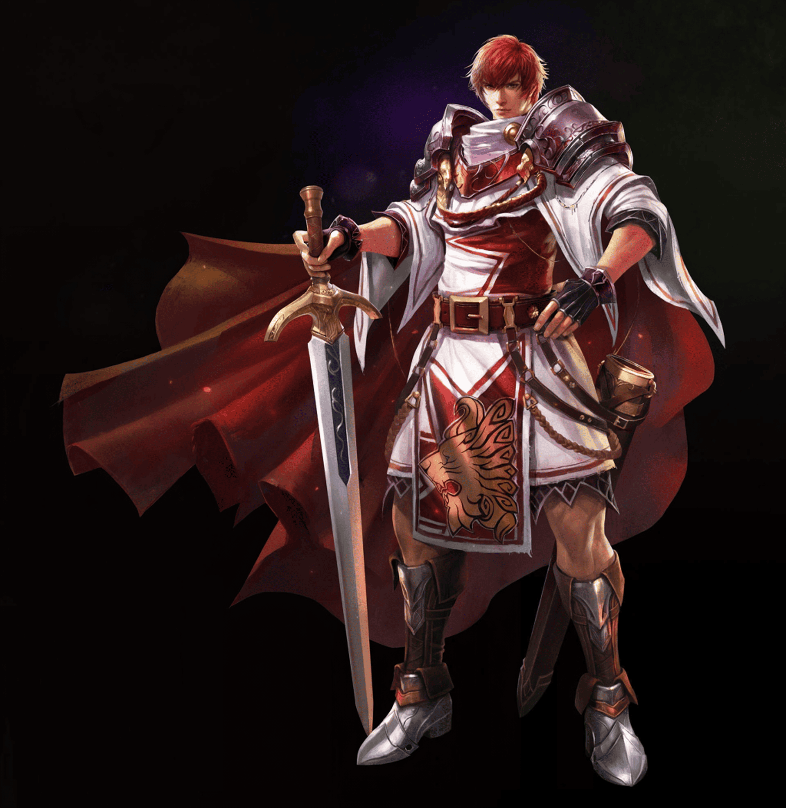

效果較弱/卡頓的裝置可關閉戰鬥特效；「傷害數字」可獨立關閉、其餘特效保留（開始前設定，遊戲中不再提供）

放置天堂 - 以血為盟
創造您的角色並開始冒險
v2.4.0
本遊戲為非官方免費同人作品，絕無營利意圖；遊戲內圖片與音樂版權歸原權利方 NCSOFT 所有，其餘程式為獨立開發，嚴禁商業販售。
選擇存檔位

1. 選擇職業
2. 分配能力 剩餘: 0
力量
敏捷
體質
智力
精神
魅力
職業⚔經典👑攻城獲勝
等級 1
防禦 (AC) 10
魔防 (MR) 0
金幣 0
HP
MP
EXP
冒險地圖
銀騎士村
這裡是安全區域，您的體力與魔力已完全恢復。
戰鬥日誌
系統與物品日誌
🎵BGM
│
🔊音效
力量 (STR)
0
敏捷 (DEX)
0
體質 (CON)
0
智力 (INT)
0
精神 (WIS)
0
魅力 (CHA)
8
近距離傷害
0
近距離命中
0
近距離爆擊率
0%
遠距離傷害
0
遠距離命中
0
遠距離爆擊率
0%
額外傷害
0
額外命中
0
魔法傷害
0
額外魔法點數
0
魔法命中
0
魔法爆擊率
0%
MP消耗減免
0%
HP恢復量
0
MP恢復量
0
迴避率 (ER)
0%
傷害減免 (DR)
0
火屬性抗性
0%
水屬性抗性
0%
風屬性抗性
0%
地屬性抗性
0%
攻擊速度
1.0s
升級點數：0
以上方 +／- 重新分配，按「確認」才生效
物品名稱🔓
物品說明